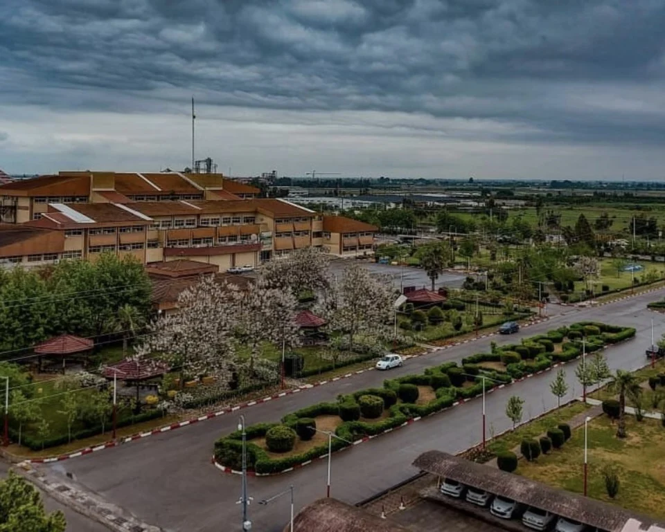
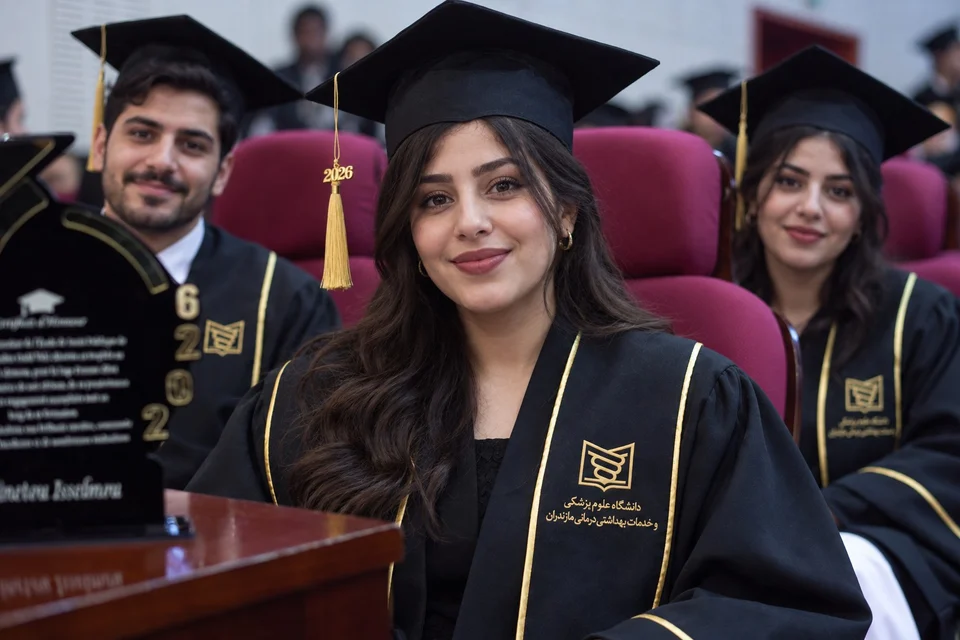

01 · ORIGIN
همهچیز از یک
روز معمولی شروع شد.
همین محوطه، همین پنجرهها، و تصمیمی که آن روز هنوز نمیدانستیم چقدر بزرگ خواهد شد.
SCROLL TO MOVE THE FILM01 · ORIGIN
همین محوطه، همین پنجرهها، و تصمیمی که آن روز هنوز نمیدانستیم چقدر بزرگ خواهد شد.
SCROLL TO MOVE THE FILM02 · TIME
کلاس، کشیک، امتحان و تمرین؛ تکرارهایی که آرامآرام به مهارت تبدیل شدند.
03 · RESPONSIBILITY
وقتی تصمیمها دیگر روی کاغذ نبودند و روبهروی ما یک انسان واقعی قرار داشت.
04 · THE OATH
فارغالتحصیلی پایان آموزش نیست؛ لحظهای است که مسئولیت، نام و چهره پیدا میکند.
ادامهی روایت ↓دانشگاه فقط یک ساختمان نبود. همین محوطه تبدیل شد به جایی برای یاد گرفتن نظم، تحمل، دقت و مواجهه با آیندهای که روزبهروز واقعیتر میشد.

آناتومی، فیزیولوژی، پاتولوژی و داروشناسی فقط نام درس نبودند. هر کدام قطعهای از تصویری شدند که بعدها کنار تخت بیمار کامل شد.
نور سرد، سکوت متمرکز و کار تیمی. اینجا دانستهها باید تبدیل به تصمیم شوند و تصمیمها باید دقیق باشند.
چند ثانیه شادی، برای سالهایی که پشت سر گذاشته شد. اما چیزی که از این روز میماند، عنوان نیست؛ مسئولیتی است که تازه آغاز میشود.

از همین دانشگاه، برای بیمارانی که هنوز ندیدهایم؛ با دانشی که آموختهایم و مسئولیتی که انتخاب کردهایم.